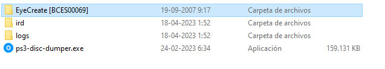

Desencriptar ISO PS3
Podemos desencriptar las ISO descargadas para poder hacerlo correr en nuestra consola PS3

Para esta Guia
Requisitos para este tutorial
- PC o Notebook con Windows 7, 8, 8.1, 10
- Para descomprimir archivos .rar o .zip
Programas para este Tutorial
Archivos Para descargar
| Archivos | Servidores | |
|---|---|---|
| PS3 Disc Dumper | Mega | |
| WEB Oficial | github.com | |
Para Empezar este Tutorial
- Descargamos los archivos
- Descomprimimos el archivo .rar o .zip
- ps3-disc-dumper-xxxx.zip
- Con la última versión disponible
- Una vez descargado nuestro archivo
- Para comenzar
- Podemos descargar una ISO encriptada o tener una que nuestra consola no la pueda leer
- Si queremos descargar una posemos usar esta WEB myrient.erista.me
- Una vez lista nuestro archivo ISO de nuestro juego
- Montamos nuestra ISO para visualizarlo como su fuera un Disco
- Para esto solo le damos doble clip o solo clip derecho y Montar
- No quedaría de la siguiente manera no en todas nuestras ISO se mostrará igual
- Ahora podemos ejecutar
ps3-disc-dumper.exeautomáticamente detectará la ISO montada y hará la comprobación automáticamente - Cuando este casi todo listo le damos a Start para comenzar a desencriptar la ISO
- Una vez terminada nos dejara el juego en formato carpeta donde mismo ejecutamos nuestro programa 
- La carpeta EyeCreate [BCES00069] (nombre del Juego [ID del Juego]) la podemos pasar a nuestro USB o disco externo para usarlo o copiarlo a nuestra consola PS3
- También podemos convertirlo a ISO nuevamente más información PS3 ISO TOOLS
- Y estaríamos listo
×